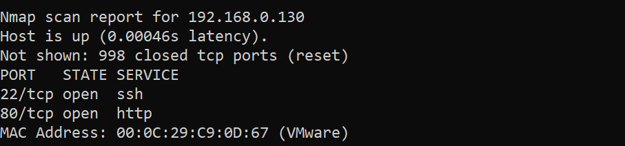

『vulnhub系列』Deathnote-1
『vulnhub系列』Deathnote-1
下载地址：
1 | https://www.vulnhub.com/entry/deathnote-1,739/ |
信息搜集：
使用nmap扫描存活主机，发现主机开启了22端口和80端口
1 | nmap 192.168.0.* |

访问80端口的web服务，发现apache默认页面

使用dirsearch 进行目录扫描
1 | dirsearch -u "http://192.168.0.130" |

访问robot.txt,说提示就在/important.jpg 中

访问/important.jpg 页面，发现没有东西，查看源码，意思是我们需要的用户名在user.txt中，暂时还找不到user.txt 先按下不表

我们访问wordpress页面，发现网页访问有问题

查看源代码，发现其跳转是使用的域名，我们在攻击机上将deathnote.vuln解析到ip地址

这里使用windows访问的网站，所以在windows中修改host(C:\Windows\System32\drivers\etc\hosts)文件,添加一条解析记录
1 | 192.168.0.130 deathnote.vuln |
再次访问页面，正常了（看夜神月的帅脸）

发现一个可疑的字符串，可能是密码**iamjustic3**

用户名可能是kira 使用wpscan查看一下，发现用户名确实有kira
1 | wpscan --url=http://192.168.0.130/wordpress --force -e --plugins-detection aggressive |

使用kira和**iamjustic3** 登录ssh试试，失败

我们继续信息搜集，发现主页有一个HINT点击查看，说是要找到notes.txt或者看L的评论

结果在这个页面是看不到L的评论的，那还有哪里可以看呢？没错就是后台
我们还扫描到了一个登录页面，使用**kira和iamjustic3** 进行登录

登录成功

发现可以发博客，我们发一篇博客可以上传文件

发现上传不了php，但在上传文件旁边，我们看到了一个媒体库，点开

发现了notes.txt ,然后我们回到管理页面，进入媒体库，查看notes.txt

点击可以看到文件位置
1 | http://deathnote.vuln/wordpress/wp-content/uploads/2021/07/notes.txt |

访问，我们发现这应该是一个字典，我们保存到pass.txt

我们使用hydra进行暴力破解，使用用户名kira 爆破失败

可能是用户名有问题，突然想起来在第一个提示里说用户名在user.txt中，我们回到发现notes.txt 的目录下，看看是否有user.txt ，结果是确实有
1 | http://deathnote.vuln/wordpress/wp-content/uploads/2021/07/ |

我们保存下来到user.txt文件中，此时使用user.txt和pass.txt进行爆破，成功找到一个
用户名：密码 l:death4me
1 | hydra -L user.txt -P pass.txt ssh://192.168.0.130 |

我们使用l的账号进行登录，成功

我们到处乱逛，终于在/opt目录下发现L目录

进入L目录，发现两个文件夹一个是kira-case和fake-notebook-rule（假的死亡笔记规则）

先进入kira-case查看，说有一些东西在fake-notebook-rule 文件夹下

在fake-notebook-rule 中找到两个文件，在hint中得知需要用到cyberchef

那么另一个文件就是用来解密的了cat case.wav
1 | 63 47 46 7a 63 33 64 6b 49 44 6f 67 61 32 6c 79 59 57 6c 7a 5a 58 5a 70 62 43 41 3d |
我们下载cyberchef
1 | https://github.com/gchq/CyberChef/releases/tag/v10.18.6 |
之后直接点开html，进行解密，得到密码：（其实是使用了16进制+base64进行了混合加密，直接解密即可）
1 | passwd : kiraisevil |

切换为kira用户su kira ,成功

使用sudo -l 查看用户可以以root权限运行的命令，发现是(ALL : ALL) ALL

那接下来就可以随意发挥了，这里使用find提权，成功
1 | sudo find /home -exec /bin/bash \; |

成果：
在使用l成功登录之后，在其目录下获得user.txt
1 | ++++++++++[>+>+++>+++++++>++++++++++<<<<-]>>>>+++++.<<++.>>+++++++++++.------------.+.+++++.---.<<.>>++++++++++.<<.>>--------------.++++++++.+++++.<<.>>.------------.---.<<.>>++++++++++++++.-----------.---.+++++++..<<.++++++++++++.------------.>>----------.+++++++++++++++++++.-.<<.>>+++++.----------.++++++.<<.>>++.--------.-.++++++.<<.>>------------------.+++.<<.>>----.+.++++++++++.-------.<<.>>+++++++++++++++.-----.<<.>>----.--.+++..<<.>>+.--------.<<.+++++++++++++.>>++++++.--.+++++++++.-----------------. |
使用brianfuck解密，得到kira的留言
1 | i think u got the shell , but you wont be able to kill me -kira |

在kira目录下也有
1 | cGxlYXNlIHByb3RlY3Qgb25lIG9mIHRoZSBmb2xsb3dpbmcgCjEuIEwgKC9vcHQpCjIuIE1pc2EgKC92YXIp |
最后的root目录下，也有